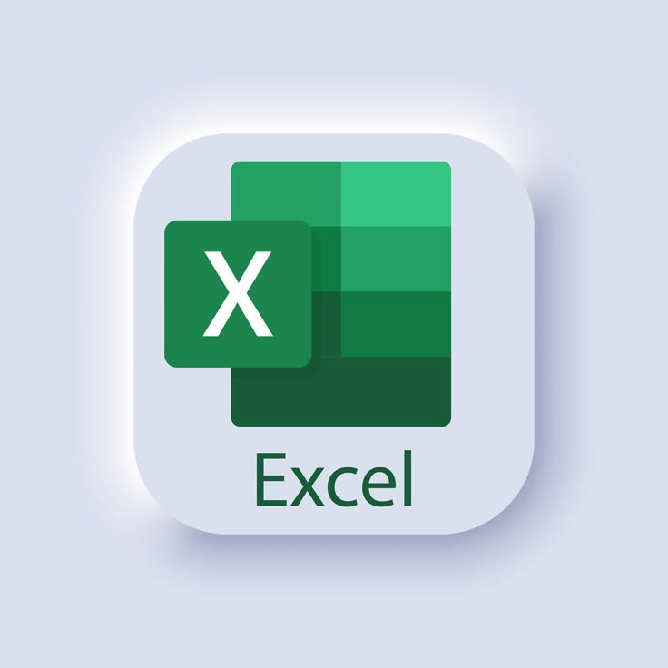

EXCEL
Excel Dashboards
Explore my Excel dashboards and related project materials.
ExcelDashboards
04 · PROJECTS

EXCEL
Explore my Excel dashboards and related project materials.

POWER BI
Explore hospital, inventory, and cafe sales dashboards.
WEB PROJECTS
Browse my website and other project files.